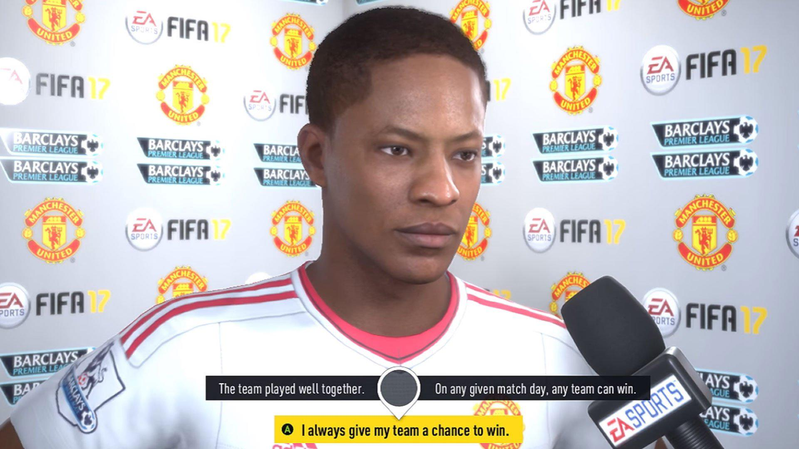

Alex Hunter nasce con il calcio nel sangue. Cresciuto in Inghilterra sotto l'occhio vigile di suo nonno, ex leggenda del pallone, e segnato dalla lontananza del padre, sogna fin da bambino di diventare una star del calcio mondiale. Il suo viaggio comincia in modo inaspettato: un torneo giovanile lo mette sotto i riflettori,
e da lì ha inizio una carriera che lo porterà a vivere il sogno di milioni di ragazzi.
Nel suo primo anno da professionista, Alex si ritrova a lottare per un posto in Premier League.
Il mondo reale del calcio è duro e pieno di ostacoli: pressioni mediatiche, panchine inaspettate,
prestiti a squadre minori, rivalità interne e tensioni familiari. Ma con determinazione, il giovane talento comincia a farsi un nome.
Fa amicizia con altri giovani promesse, tra cui Gareth Walker, un amico d'infanzia che ben presto si trasforma in rivale, e Reggie, il suo agente ambizioso.
Il suo viaggio lo porta fino negli Stati Uniti, dove affronta una nuova cultura calcistica nella MLS. Qui trova nuove sfide e occasioni di crescita, imparando
a gestire la popolarità e a credere nei propri mezzi. Tornato in Europa, riceve l'opportunità più grande della sua vita: giocare per uno dei club più prestigiosi del mondo,
il Real Madrid. A quel punto Alex è sotto i riflettori mondiali, tra Champions League, sponsorizzazioni e scelte difficili da affrontare, anche a livello personale.
Parallelamente alla carriera calcistica, Alex affronta anche un percorso emotivo. Ritrova il padre, con cui ha un rapporto difficile, e conosce sua sorellastra Kim, anche lei calciatrice in ascesa.
Le sue scelte influenzano non solo il suo futuro, ma anche quello delle persone a lui vicine.
In FIFA 19, il capitolo finale della trilogia, Alex è ormai una star affermata. Tocca a lui dimostrare di meritare il posto tra i grandi del calcio,
vincere la Champions League, e lasciare un segno nella storia. Dopo tre anni di emozioni, ostacoli e successi, la sua storia si conclude, ma il viaggio di Alex Hunter rimane una delle narrazioni più amate del mondo videoludico sportivo.
